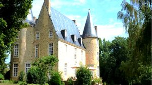
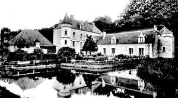
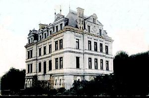
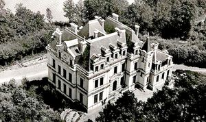
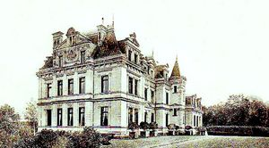
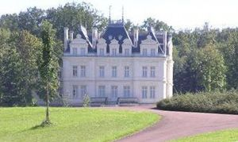
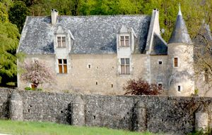
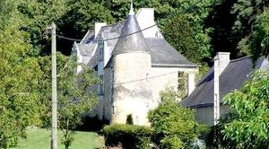

Recensement Jean-Claude Truffet
| Département | 72 — Sarthe |
| Canton | Le Lude |
| Commune | La Chapelle-aux-Choux |
| Type d'édifice | Château |
| Période d'origine | XV-XVII-XIX |
| Coordonnées GPS | 47° 37' 54" Nord et 0° 13' 51" Est Chataigneraie GPS : 47° 37' 28,45" Nord, 0° 13' 49,2" Est |








Trois châteaux à la Chapelle aux Choux dont la Chataigneraie, Perray et Vaux au Choux. CHATAIGNERAIE, ce château fut construit ex-nihilo à partir de 1880 dans le parc de Vauduchou, par l'architecte angevin Dessauze pour Henri Boutrais, époux de Marie Potry héritière de Vauduchou. Henri Boutrais était le fils de Eugène Boutrais, Président de la cour d'appel d'Angers. Par mariage, le château passe ensuite à M. de Beauvais qui épouse Geneviève Potry, et enfin à M. Graffin qui épouse Antoinette Gendron. La maison de La Châtaigneraie, revendue plusieurs fois, est aujourd'hui complètement restaurée et le parc paysager modifié : un escalier monumental descend dans de nouveaux jardins ornés de statues et de vases. VAU du CHOUX, la seigneurie de paroisse était un membre du comté du Lude, comme vassal de la châtellenie de la Motte-sous-le-Lude. Les différents fiefs de cette paroisse étaient le Perray, près et au sud du Bourg, construit à la fin du XVe siècle, qui appartenait au sieur Corbin du Mans; la Giraudière, avec chapelle, à l'ouest du même bourg, à Mme de Mainville; Nuillé, au nord, aussi avec chapelle; la Fosse, à l'ouest; le Vau-du-Chou, peu au-dessus du Perray. Vauduchou appartient vers 1776 au chevalier de la Houssaye. En 1829, au chevalier de Malherbe, puis aux Potry avant de devenir une dépendance du nouveau château de la Châtaigneraie. Dans son dernier état, Vauduchou ressemblait à une maison néo-classique à fronton qui fut probablement construite ou remaniée entre 1812 et 1845.
PERRAY, historique idem jusqu'en 1657 que du Val du Choux, Des aveux de 1657 et 1679 établissent, comme relevant du comté du Lude, la dame Renée Jacques de la Heurelière, veuve de Jean le Jeay, sieur de la Giraudière. Le site sur lequel est implanté ce château est sur le flanc nord du coteau de la rive gauche du Loir. Il se divise en deux espaces distincts avec leur propre entrée : la basse-cour et le château. Le logis placé le plus au nord ménage un espace ensoleillé pour la cour sur laquelle il donne. Le logis principal pourrait dater de la première moitié du XVIe siècle. Il est en rez-de-chaussée sur la cour avec un escalier dans oeuvre situé à l'arrière. Un pavillon cantonne l'angle sud-ouest de la cour.
Chataigneraie; Famille Henri Boutrais, Vau au Choux; famille Corbin du Mans Perray; de Jean le Jeay
"
Trois châteaux à la Chapelle aux Choux dont la Chataigneraie grav 3-4-5-6, Aubenière grav 2, Pernay grav-7-8 et Vaux grav-1 . Chapelle aux Choux-GPS : 47° 37' 54" Nord et 0° 13' 51" Est Chataigneraie GPS : 47° 37' 28,45" Nord, 0° 13' 49,2" Est